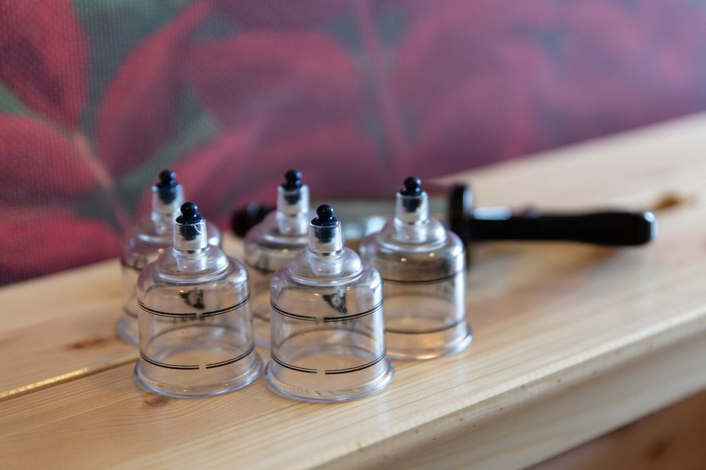

Bondi Junction
Shizuka is here on Mondays and Fridays.
Elixr Health Club, Level C2, 9 Bronte Rd, Bondi Junction NSW 2022
Open in Google MapsA design proposal for Kaizen Remedial Massage Therapy (not the official website)
Bondi Junction / Potts Point
We combine a clinical approach with the Japanese philosophy of “Kaizen”, continuous improvement, supporting people with active lifestyles in Sydney’s Eastern suburbs.
Who we are
We aim to become a leading provider of regular therapeutic care that empowers people to thrive, living a life of health, longevity and vitality. We also envision building an international bridge between Japan and Australia.
We’re thankful for every connection we make, especially those who understand that true wealth lies in good health.
We value open, honest communication. It’s the key to growing together and getting the best out of each other.
We make the most of every moment, and strive to live with intention, purpose and continuous improvement.
Treatments
A personalised therapy designed to not only induce relaxation but also foster functional improvement. It addresses acute injuries while supporting your long-term well-being.
Deep tissue techniques within your remedial massage, working beyond the surface layers of your muscles to ease long-standing tension and heaviness.
An enhancement option we specialise in. You can pair it with remedial massage.

Pricing
Private health funds are welcome with remedial massage services.
Our team
Remedial Massage Therapist
With a medical science background from the University of Sydney and 7 years of experience working alongside chiropractors and physiotherapists, Shizuka brings a holistic approach to well-being. She has practised cupping for over three years.
Mondays and Fridays in Bondi Junction. Tuesdays and Thursdays in Potts Point.
Massage Therapist
Em began her journey in healthcare in Thailand, inspired by caring for her grandmother. Now in Australia, she provides massage therapy with care and dedication.
Currently away. We expect her back by December 2026.
Locations
Shizuka is here on Mondays and Fridays.
Elixr Health Club, Level C2, 9 Bronte Rd, Bondi Junction NSW 2022
Open in Google MapsShizuka is here on Tuesdays and Thursdays.
Hotel Indigo, Suite 708/2-14 Kings Cross Rd, Potts Point NSW 2011
Open in Google Maps